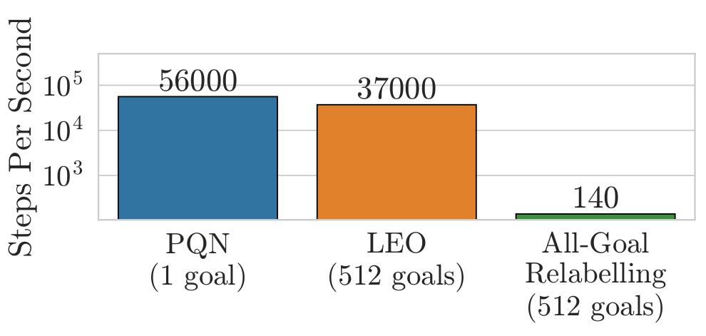
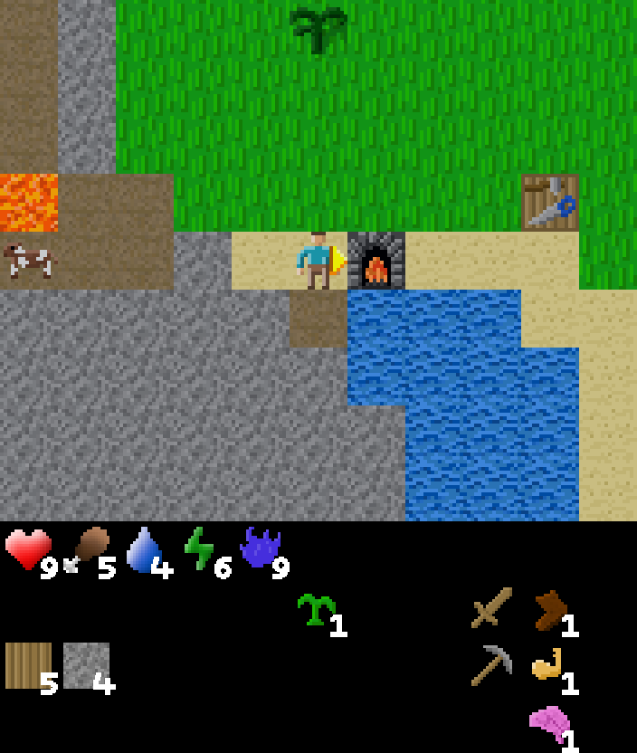

2026-04-20
This blog post is meant to serve as an accessible writeup for the LEO manuscript. Code for all methods discussed on this page is in the purejaxgcrl repository, which supports goal-conditioned Craftax and Gridworld environments.
We consider the online goal-conditioned reinforcement learning (GCRL) paradigm. Our goal-conditioned policy $\pi(s, g)$ is used to maximise the expected discounted return from the goal conditioned reward function $\mathcal{R}(s, g)$ for a commanded goal $g$. We now consider a suboptimal trajectory gathered in a simple goal-conditioned maze environment.
The easiest approach is to simply treat this like any other RL environment and learn on the gathered trajectory, with respect to the commanded goal. Our implicit assumption here is that the goal space is just a component of the state space.

Each pulse in this animation is meant to represent a learning update from the $(s, a, s')$ tuple at the source with respect to the goal at the sink.
Surely we can do better? In our given trajectory we can see that our agent achieves many goals along the way, but this information is never communicated to it in the learning step.
One solution is to employ goal relabelling, where we take transitions that were gathered through commanding some goal $g$ and use these to learn with respect to some different goal $g'$. Note that this makes our data off-policy.
Taking a step back, what we are doing here is decomposing our decision problem into a true underlying environment and a goal conditioning layer, which can affect the reward but not the transition dynamics. We also assume that we have oracle access to the goal conditioned reward function $\mathcal{R}(s, g)$ and can query this arbitrarily offline. While the true environment may be a black box, the goal conditioning functions like a wrapper around it that we can control and manipulate.
The most common method for goal relabelling is Hindsight Experience Replay, where we relabel with a goal $g'$ that is achieved later in the episode (assuming the goal set has such a notion of binary achievability).

HER is great and it works well empirically, but it feels like papering over a problem rather than addressing it. It also leaves open many questions. Which goal do we use to relabel if we achieve many in an episode? What if our goal space is such that we can complete multiple goals per timestep? What if our goal function is continuous and has no concept of completion? We don't just want to relabel with positive examples of completed goals, what's the right mixing proportion? Hold on... we don't even have to relabel with just a single goal - couldn't we relabel with many?
If we are working with a finite goal set, this line of thinking has one logical conclusion: relabel every transition with every goal.

This has lots of nice properties. We extract maximal information from every transition by considering how it relates to every goal in our goal set. An important point to note is that the motivation for HER can sometimes lead people into the mindset that learning signal only exists in positive examples (where we achieve a goal), which is not generally the case. There is information content in all transition-goal pairings. Furthermore, these updates will propagate bootstrapped value estimates, which is especially useful when only considering single step bootstrapped returns. Relabelling with all goals sidesteps the issue of label selection entirely, and therefore also removes the assumption for goals to be binary terminal in form.
However, this is incredibly slow, as it blows up your training data by a factor of $|\mathcal{G}|$. This is impractical for any non-trivial goal set.
This begs the question: can we get the maximal information extraction properties of all-goals relabelling without making learning unbearably slow?
The answer is yes! To achieve all-goals relabelling without incurring intolerably slow learning, we propose pushing (or currying) the goal space into the output of the $Q$-network. That is we reparameterise our network from
$$Q(s,g): \mathcal{S} \times \mathcal{G} \rightarrow \mathcal{A}$$to
$$Q(s): \mathcal{S} \rightarrow \mathcal{G} \times \mathcal{A}$$This gives an 'all-goals' $Q$-network that, for a given state, outputs the $Q$-values for every goal-action pair. This allows us to perform an all-goals learning step with a single backward pass of the network.
$$\mathcal{L} = (\mathcal{R}(s') + \gamma \cdot \text{max}_{a'}Q(a'| s') - Q(a | s))^2$$We refer to this method as Learning Everything all at Once (LEO).

Note that we are not the first to propose this type of all-goals update, with Horde (Sutton et al. 2011) and $Q$-map (Pardo et al. 2018) being the most notable examples. The basic LEO method could be considered a generalisation of $Q$-Map to arbitrary discrete goal sets or equivalently as a Horde network with a learned shared embedding and a parallelised update.
Skipping ahead a bit, we do see that LEO is significantly faster than all-goals relabelling, as expected.

We now consider applying GCRL to the challenging Craftax environment. We define a large, heterogeneous set of 512 goals in the environment that span from collecting specific amounts of every type of resource, standing next to every type of block and enemy and reaching various levels of the dungeon. For a full listing of goals see the appendices of the manuscript.

The agent in the above image is simultaneously completing the goals tools/wood_sword, tools/stone_pickaxe, inventory/wood_5, inventory/stone_4, block_map/furnace_right, as well as others.
Craftax has so far been unsolved by single-task reinforcement learning methods, in large part due to its long horizons and hard exploration components. An alternative paradigm for solving these types of environments is to define a large goal set that gives good state coverage and to train a goal-conditioned agent. While this may seem like a harder learning problem, the hope is that a dense enough set of goals will overcome the exploration problem.
This approach is somewhat similar to reward shaping - a tried and tested method. The crucial difference that we can be far less precise with our goal set, potentially including many goals that don't end up being relevant to solving the environment. Reward shaping usually involves repeated trial and error of training an agent, observing the final performance and iteratively tweaking the reward function. Ideally with our approach, we can simply define a large goal set once, and while the useless or counterproductive goals may waste time they won't sink the entire training run.